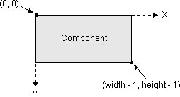
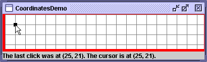

This section gives an overview of what you need to know before you write code that paints Swing components. It concentrates on the coordinate system, including how borders restrict the coordinates available for painting, and on theGraphicsobject passed in to paint methods. Although most of the API discussed isn't specific to Swing components, we concentrate on whatJComponents need. For information on actually painting, you should refer to the API documentation for theGraphicsclass and to the 2D Graphics trail.
The Coordinate System
Each component has its own integer coordinate system, ranging from (0, 0) to (width - 1, height - 1), where width and height are the size of the component in pixels. As the following figure shows, the upper left corner of a component's painting area is (0, 0). The x coordinate increases to the right, and the y coordinate increases downward. When painting, you must take into account not only the component's size but also the size of the component's border, if any. For example, a border that paints a one-pixel line around a component effectively changes the top leftmost corner of the component's non-background painting area from (0,0) to (1,1) and reduces the width and the height of the painting area by two pixels each (one pixel per side). The following figure demonstrates this:
[PENDING: This figure will change to match the previous one better, and to be clearer and more correct.] You can get the width and height of any
JComponentusing itsgetWidthandgetHeightmethods. ThegetSizemethod is another option that works for allComponents. To determine the border size, use thegetInsetsmethod. Here is some code that a component might use to determine the width and height available for custom painting:protected void paintComponent(Graphics g) { ... Insets insets = getInsets(); int currentWidth = getWidth() - insets.left - insets.right; int currentHeight = getHeight() - insets.top - insets.bottom; ... .../* First painting occurs at (x,y), where x is at least insets.left, and y is at least insets.top. */... }To familiarize yourself with the coordinate system, you can play with the CoordinatesDemo application, which features a component implemented using an inner class named
CoordinateArea. TheCoordinateAreahas a preferred size of 400x75 and a solid red border that occupies 5 pixels at the left and bottom, and 1 pixel at the top and right. Like any good component, it starts painting its innards (a 20x20-pixel gray grid) where the border ends — in this case, at (5,1). TheCoordinateAreaalso paints a dot where the user clicks. As you can see from the following figure, a label at the bottom of the GUI displays information about the cursor and click location.
Try this:
- Run CoordinatesDemo using JavaTM Web Start. Or, to compile and run the example yourself, consult the example index.
- Move the cursor over the
CoordinateArea, including its red border.
Note the location of the cursor, as displayed at the bottom of the window. (Until bug # 4777616 is fixed, when you run CoordinatesDemo using Java Web Start the size of the main component won't be 400x75 — it'll be taller.)- Move the cursor to the center of the
CoordinateAreaand click.
A 7x7 dot appears, and the label at the bottom of the window displays its location, as well as the cursor's current location.- Move the cursor to be near or barely within the red border on the left or bottom and click.
The dot that appears looks smaller than 7x7 because it's obscured by the border. The component's painting code paints it fully, but because thepaintBordermethod is called afterpaintComponent, the border is painted on top of the dot. If the border didn't completely paint over its area in an opaque color, you would be able to see more of the dot.The SelectionDemo example shown in the following figure is another that can give you a feeling for coordinates. It paints a continuously updating rectangle, which the user sets by dragging the mouse. To avoid unnecessary painting, the component's mouse-dragged and mouse-released event handler uses a version of the
repaintmethod that specifies which area of the component needs to be repainted.You can run SelectionDemo using Java Web Start. Or, to compile and run the example yourself, consult the example index. The code is in
SelectionDemo.java. The following snippet shows howrepaintis invoked by the event handler for mouse-dragged and mouse-released events. The handler gets the current cursor location, updates the selection rectangle, calculates the total area to be repainted, and then specifies that area to therepaintmethod. Note that the total area to be repainted is equal to the previously painted area plus the newly selected area. This way, it cleans up the previous painting, avoiding the faux pas of leaving behind ghost images of the selection rectangle.Here is the code that paints the selection rectangle on top of the image:void updateSize(MouseEvent e) { int x = e.getX(); int y = e.getY(); ...//save previous selection rectangle (rectToDraw) //in previousRectDrawn... //calculate new values for rectToDraw... Rectangle totalRepaint = rectToDraw.union(previousRectDrawn); repaint(totalRepaint.x, totalRepaint.y, totalRepaint.width, totalRepaint.height); }g.drawRect(rectToDraw.x, rectToDraw.y, rectToDraw.width - 1, rectToDraw.height - 1)
Note: The last two arguments todrawRecthave "- 1" because the painting system draws lines just below the specified rectangle, instead of within the specified rectangle. The same rule of specifying one less than the desired width applies to otherdrawXxxmethods. ForfillXxxmethods, on the other hand, you specify exactly the desired width and height in pixels.Here are examples of painting two rectangles of the same size, one filled and one not:
g.fillRect(x, y, rectWidth, rectHeight); g.drawRect(x, y, rectWidth - 1, rectHeight - 1);


The Graphics Object and Graphics2D
TheGraphicsobject passed into thepaintComponentmethod provides both a context and some methods for simple painting. In almost every case,Graphicsobjects are actuallyGraphics2Dobjects. TheGraphics2Dclass extendsGraphicsto provide more sophisticated control over geometry, coordinate transformations, color management, and text layout. You can cast anyGraphicsparameter into aGraphics2Dobject as long as your program uses the Java 2 platform (1.2 or later) and doesn't use the old printing API.
Version note: The old printing API is centered around thejava.awt.PrintJobclass. A newer printing API centered aroundjava.awt.print.PrinterJobwas introduced in 1.2; it usesGraphics2D. In 1.4.1, Java Plug-in printing was updated to use the newer printing API.The painting methods defined by
Graphicsinclude such standbys asdrawRect,fillRect, anddrawLine. TheGraphics2Dclass adds more flexible methods such asdraw(Shape)andfill(Shape).The graphics context provided by a
Graphicsobject consists of state such as the current painting color, the current font, and the current painting area. TheGraphics2Dclass adds more state, such as the alpha compositing mode, stroke, rendering hints, and color patterns such as textures and gradients.In
JComponents, theGraphicsobject is initialized just before it's passed topaintComponent, so that its color and font are set to the foreground color and font of the component. The sameGraphicsobject is then passed to thepaintBorderandpaintChildrenmethods. This reuse is efficient but can lead to trouble if painting code permanently changes theGraphicsobject's state. For example, permanently changing the alpha compositing mode of aGraphics2Dobject could cause the component's border or children to be painted incorrectly. To avoid problems, remember this rule:
TheGraphicsobject should have the same state when you're finished painting as it had when you started.
You can take two approaches to avoid permanently changing the
Graphicsobject: either restore theGraphicsobject's original state, or use a copy of the original object. If you take the first approach, you don't need to bother restoring the font and color, since those properties are usually set before painting. Here's an example of the first approach:Here's an example of the second approach://Example of restoring the Graphics object's state Graphics2D g2d = (Graphics2D)g; g2d.translate(x, y); //set the transform ... g2d.translate(-x, -y); //go back to the original transformThe advantage of the first approach is that it doesn't create extra objects. The advantage of the second is that it's easy and guaranteed to succeed, no matter how much state you change.//Example of copying the Graphics object Graphics2D g2d = (Graphics2D)g.create(); //copy g g2d.translate(x, y); ... g2d.dispose(); //release the copy's resources
When writing your painting code, keep in mind that you can't depend on any graphics context except what's provided by the
Graphicsobject. For example, if you specify a painting area torepaint, you can't rely on the same painting area being specified in the next call topaintComponent. For one thing, multiple repaint requests can be coalesced into a singlepaintComponentcall. For another, the painting system occasionally callspaintComponenton its own, without any repaint request from your program — for example, in response to first being shown or to a window that obscured it being moved.